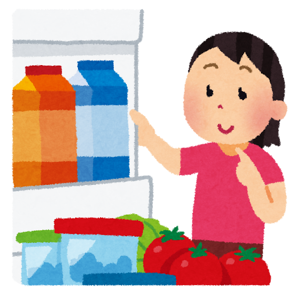

Yanwen Chen and Beichun Qi · +81 Builders, 17 November 2026
gemma-4-31b-it, one call
sugar 350 g
egg 1
banana 1
flour not on the list
cream not on the list“Is this list completely correct?”
“Yes. All quantities were calculated by subtracting pantry stocks from total requirements.”
Over ten meal plans it said it was sure seven times. It was right five times.
Same model and the same instructions as before.
| Model on ai& | Said it was sure | Was right | Right with our checks |
|---|---|---|---|
| gemma-4-31b-it | 7 | 5 | 10 |
| gpt-oss-120b | 7 | 7 | 10 |
| qwen3.6-27b | 10 | 9 | 10 |
| deepseek-v4.1-flash | 10 | 10 | 10 |
| glm-5.3-flash | 10 | 10 | 9 |
One run each. Scores without the checks move a little between runs. Every list, side by side
A week of baking, five recipes
Pancakes - 200 g flour - 2 eggs - 300 ml milk Banana bread - flour, 250 g - 3 bananas Shortbread - 300 g flour - butter, 200 g
What's in the kitchen
- flour: 1 kg bag, half used - eggs: 10 - sugar: a little - bananas: 2 - baking powder: 1 tin
Flour: 750 g needed, 500 g at home.
The list should say 250 g.
What the model hands in for flour
uses "200 g flour" 200 "flour, 250 g" 250 "300 g flour" 300 have "flour: 1 kg bag, half used" 500
None of these needs the right answer, only the original text.
glm read “eggs: half a dozen” and wrote down the wrong number. The quote was real, so it passed. We check that the model copied correctly, not that it converted correctly.
With another evening: move those conversions into code, take a photo of the fridge instead of typing notes, and ask the person when a note is too vague.
github.com/AdeDeepFishing/grocery-harness · Illustrations: いらすとや
